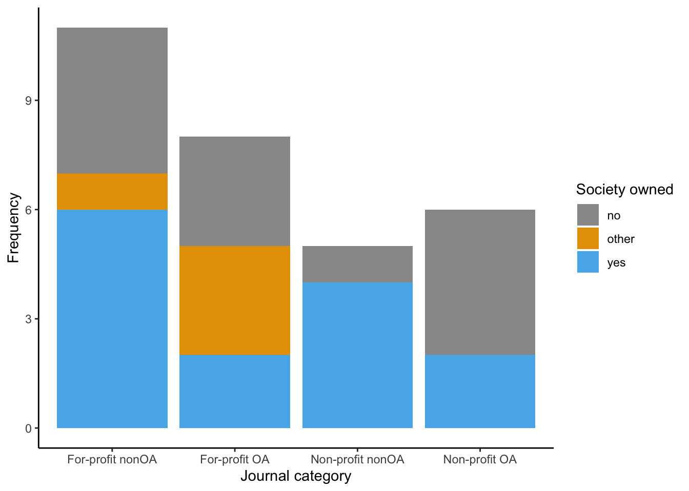

Last updated: 2023-12-05
Checks: 7 0
Knit directory:
workflowr-policy-landscape/
This reproducible R Markdown analysis was created with workflowr (version 1.7.1). The Checks tab describes the reproducibility checks that were applied when the results were created. The Past versions tab lists the development history.
Great! Since the R Markdown file has been committed to the Git repository, you know the exact version of the code that produced these results.
Great job! The global environment was empty. Objects defined in the global environment can affect the analysis in your R Markdown file in unknown ways. For reproduciblity it’s best to always run the code in an empty environment.
The command set.seed(20220505) was run prior to running
the code in the R Markdown file. Setting a seed ensures that any results
that rely on randomness, e.g. subsampling or permutations, are
reproducible.
Great job! Recording the operating system, R version, and package versions is critical for reproducibility.
Nice! There were no cached chunks for this analysis, so you can be confident that you successfully produced the results during this run.
Great job! Using relative paths to the files within your workflowr project makes it easier to run your code on other machines.
Great! You are using Git for version control. Tracking code development and connecting the code version to the results is critical for reproducibility.
The results in this page were generated with repository version 899cda5. See the Past versions tab to see a history of the changes made to the R Markdown and HTML files.
Note that you need to be careful to ensure that all relevant files for
the analysis have been committed to Git prior to generating the results
(you can use wflow_publish or
wflow_git_commit). workflowr only checks the R Markdown
file, but you know if there are other scripts or data files that it
depends on. Below is the status of the Git repository when the results
were generated:
Ignored files:
Ignored: .DS_Store
Ignored: .RData
Ignored: .Rhistory
Ignored: .Rproj.user/
Ignored: data/.DS_Store
Ignored: data/original_dataset_reproducibility_check/.DS_Store
Ignored: output/.DS_Store
Ignored: output/Figure_3B/.DS_Store
Ignored: output/created_datasets/.DS_Store
Untracked files:
Untracked: gutenbergr_0.2.3.tar.gz
Unstaged changes:
Modified: Policy_landscape_workflowr.R
Modified: data/original_dataset_reproducibility_check/original_cleaned_data.csv
Modified: data/original_dataset_reproducibility_check/original_dataset_words_stm_5topics.csv
Modified: output/Figure_3A/Figure_3A.png
Modified: output/created_datasets/cleaned_data.csv
Note that any generated files, e.g. HTML, png, CSS, etc., are not included in this status report because it is ok for generated content to have uncommitted changes.
These are the previous versions of the repository in which changes were
made to the R Markdown
(analysis/9_Journals_additional_info.Rmd) and HTML
(docs/9_Journals_additional_info.html) files. If you’ve
configured a remote Git repository (see ?wflow_git_remote),
click on the hyperlinks in the table below to view the files as they
were in that past version.
| File | Version | Author | Date | Message |
|---|---|---|---|---|
| Rmd | 899cda5 | zuzannazagrodzka | 2023-12-05 | wflow_publish(files = "analysis/9_Journals_additional_info.Rmd") |
| Rmd | c118615 | zuzannazagrodzka | 2023-12-05 | . |
| Rmd | 9931d77 | zuzannazagrodzka | 2023-12-05 | Improving the description and cleaning the script |
| html | 61f889d | zuzannazagrodzka | 2023-12-05 | Build site. |
| Rmd | 903da06 | zuzannazagrodzka | 2023-12-05 | Update the file paths for all analysis and figures |
This script creates a figure showing how many journals per category (for-profit OA, for-profit noOA, not-for-profit OA and not-for-profit noOA) are owned by the societies, different institutions (other) or solely by publishers.
# Clearing R
rm(list=ls())
# Loading libraries
# Libraries used for text/data analysis
library(tidyverse)
library(dplyr)
library(tidytext)
# Libraries used to create plots
library(ggplot2)
library(RColorBrewer)
# Library to create a table when converting to html
library("kableExtra")
# Library to read an arrow file
library(arrow)Importing data
# Importing dataset that we originally created and used in our analysis
df_corpuses <- read_feather(file = "./data/original_dataset_reproducibility_check/original_cleaned_data.arrow")Adding column based on the name of the journal if its OA run by for profit or not-for-profit:
for_profit_no_oa: “BioSciences”, “Biological Conservation”, “Conservation Biology”, “Ecological Applications”,“Ecology Letters”, “Ecology”, “Frontiers in Ecology and the Environment”, “Global Change Biology”, “Journal of Applied Ecology”, “Nature Ecology and Evolution”, “Trends in Ecology & Evolution”
no_profit_no_oa: “American Naturalist”, “Annual Review of Ecology Evolution and Systematics”, “Evolution”, “Philosophical Transactions of the Royal Society B”, “Proceedings of the Royal Society B Biological Sciences”
for_profit_oa: “Arctic, Antarctic, and Alpine Research”, “Biogeosciences”, “Conservation Letters”, “Diversity and Distributions”, “Ecology and Evolution”, “Evolutionary Applications”, “Neobiota”, “PeerJJournal”
no_profit_oa: “Ecology and Society”, “Evolution Letters”, “Frontiers in Ecology and Evolution”, “Plos Biology”, “Remote Sensing in Ecology and Conservation”, “eLifeJournal”
# Data preparation
## Getting a data set with the words
data_journals <- df_corpuses
dim(data_journals)[1] 22822 10colnames(data_journals) [1] "txt" "filename" "name" "doc_type"
[5] "stakeholder" "sentence_doc" "orig_word" "word_mix"
[9] "word" "org_subgroups"unique(data_journals$org_subgroups)[1] "advocates" "funders" "journals_nonOA"
[4] "journals_OA" "publishers_nonProfit" "publishers_Profit"
[7] "repositories" "societies" # Merging and removing duplicates
data_journals <- data_journals %>%
rename(document = name) %>%
select(document, org_subgroups) %>%
distinct(document, .keep_all = TRUE) %>%
filter(org_subgroups %in% c("journals_nonOA", "journals_OA")) %>%
rename(access = org_subgroups)
data <- data_journals
# Adding a column with a new variable "profit access"
data$profit_access <- data$document
data$profit_access[data$profit_access%in% c("BioSciences", "Biological Conservation", "Conservation Biology", "Ecological Applications","Ecology Letters", "Ecology", "Frontiers in Ecology and the Environment", "Global Change Biology", "Journal of Applied Ecology", "Nature Ecology and Evolution", "Trends in Ecology & Evolution")] <- "for_profit_no_oa"
data$profit_access[data$profit_access%in% c("American Naturalist", "Annual Review of Ecology Evolution and Systematics", "Evolution", "Philosophical Transactions of the Royal Society B", "Proceedings of the Royal Society B Biological Sciences")] <- "no_profit_no_oa"
data$profit_access[data$profit_access%in% c("Arctic, Antarctic, and Alpine Research", "Biogeosciences", "Conservation Letters", "Diversity and Distributions", "Ecology and Evolution", "Evolutionary Applications", "Neobiota", "PeerJJournal")] <- "for_profit_oa"
data$profit_access[data$profit_access%in% c("Ecology and Society", "Evolution Letters", "Frontiers in Ecology and Evolution", "Plos Biology", "Remote Sensing in Ecology and Conservation", "eLifeJournal")] <- "no_profit_oa"
check <- data
check <- check %>%
select(profit_access) %>%
group_by_all() %>%
summarise(COUNT = n())
check# A tibble: 4 × 2
profit_access COUNT
<chr> <int>
1 for_profit_no_oa 11
2 for_profit_oa 8
3 no_profit_no_oa 5
4 no_profit_oa 6data_journals <- data
# Adding a column "profit"
data$profit <- data$profit_access
data$profit[data$profit_access%in% c("for_profit_no_oa", "for_profit_oa")] <- "profit"
data$profit[data$profit_access%in% c("no_profit_no_oa", "no_profit_oa")] <- "no_profit"
# # Check that all rows were replaced
check <- data
check <- check %>%
select(profit) %>%
group_by_all() %>%
summarise(COUNT = n())
check# A tibble: 2 × 2
profit COUNT
<chr> <int>
1 no_profit 11
2 profit 19data_journals <- data# Adding a column with a new variable "society_journal" that tells us if the journal is run by societies/other organisations or just by publisher
data <- data_journals
data$society_journal <- data$document
data$society_journal[data$society_journal%in% c("BioSciences", "Conservation Biology", "Ecological Applications", "Ecology", "Frontiers in Ecology and the Environment", "Journal of Applied Ecology", "American Naturalist", "Evolution", "Philosophical Transactions of the Royal Society B", "Proceedings of the Royal Society B Biological Sciences", "Conservation Letters", "Ecology and Evolution", "Evolution Letters", "Remote Sensing in Ecology and Conservation")] <- "yes"
data$society_journal[data$society_journal%in% c("Biological Conservation", "Global Change Biology", "Nature Ecology and Evolution", "Trends in Ecology & Evolution", "Annual Review of Ecology Evolution and Systematics", "Diversity and Distributions", "Evolutionary Applications", "PeerJJournal", "Ecology and Society", "Frontiers in Ecology and Evolution", "Plos Biology", "eLifeJournal")] <- "no"
data$society_journal[data$society_journal%in% c("Ecology Letters", "Arctic, Antarctic, and Alpine Research", "Biogeosciences", "Neobiota")] <- "other"
# Check that all rows were replaced
check <- data
check <- check %>%
select(society_journal) %>%
group_by_all() %>%
summarise(COUNT = n())
check# A tibble: 3 × 2
society_journal COUNT
<chr> <int>
1 no 12
2 other 4
3 yes 14data_journals <- data# Data prep for the figure
head(data_journals)# A tibble: 6 × 5
document access profit_access profit society_journal
<chr> <chr> <chr> <chr> <chr>
1 American Naturalist journ… no_profit_no… no_pr… yes
2 Annual Review of Ecology Evolutio… journ… no_profit_no… no_pr… no
3 Biological Conservation journ… for_profit_n… profit no
4 BioSciences journ… for_profit_n… profit yes
5 Conservation Biology journ… for_profit_n… profit yes
6 Ecological Applications journ… for_profit_n… profit yes # calculate percentages, put into dataframe
df <- data_journals %>%
mutate(access = factor(access)) %>%
mutate(profit_access = factor(profit_access)) %>%
mutate(profit = factor(profit)) %>%
mutate(society_journal = factor(society_journal)) %>%
group_by(profit_access, society_journal) %>%
summarize(n = n()) %>%
mutate(freq = n / sum(n))`summarise()` has grouped output by 'profit_access'. You can override using the
`.groups` argument.df# A tibble: 10 × 4
# Groups: profit_access [4]
profit_access society_journal n freq
<fct> <fct> <int> <dbl>
1 for_profit_no_oa no 4 0.364
2 for_profit_no_oa other 1 0.0909
3 for_profit_no_oa yes 6 0.545
4 for_profit_oa no 3 0.375
5 for_profit_oa other 3 0.375
6 for_profit_oa yes 2 0.25
7 no_profit_no_oa no 1 0.2
8 no_profit_no_oa yes 4 0.8
9 no_profit_oa no 4 0.667
10 no_profit_oa yes 2 0.333 legend_title <- "Society owned"
ggplot(df, aes(x = profit_access, y = n, fill = society_journal)) +
geom_bar(stat='identity') +
theme_bw() +
theme(panel.border = element_blank(), panel.grid.major = element_blank(),
panel.grid.minor = element_blank(), axis.line = element_line(colour = "black")) +
scale_fill_manual(legend_title, values=c("#999999", "#E69F00", "#56B4E9")) + #no, other, yes
scale_x_discrete(limit = c("for_profit_no_oa", "for_profit_oa", "no_profit_no_oa", "no_profit_oa"),
labels = c("For-profit nonOA","For-profit OA","Non-profit nonOA", "Non-profit OA")) +
labs(y= "Frequency", x = "Journal category")
| Version | Author | Date |
|---|---|---|
| 61f889d | zuzannazagrodzka | 2023-12-05 |
sessionInfo()R version 4.3.1 (2023-06-16)
Platform: x86_64-apple-darwin20 (64-bit)
Running under: macOS Monterey 12.6
Matrix products: default
BLAS: /Library/Frameworks/R.framework/Versions/4.3-x86_64/Resources/lib/libRblas.0.dylib
LAPACK: /Library/Frameworks/R.framework/Versions/4.3-x86_64/Resources/lib/libRlapack.dylib; LAPACK version 3.11.0
locale:
[1] en_US.UTF-8/en_US.UTF-8/en_US.UTF-8/C/en_US.UTF-8/en_US.UTF-8
time zone: Europe/London
tzcode source: internal
attached base packages:
[1] stats graphics grDevices utils datasets methods base
other attached packages:
[1] arrow_13.0.0.1 kableExtra_1.3.4 RColorBrewer_1.1-3 tidytext_0.4.1
[5] lubridate_1.9.3 forcats_1.0.0 stringr_1.5.0 dplyr_1.1.3
[9] purrr_1.0.2 readr_2.1.4 tidyr_1.3.0 tibble_3.2.1
[13] ggplot2_3.4.3 tidyverse_2.0.0 workflowr_1.7.1
loaded via a namespace (and not attached):
[1] gtable_0.3.4 xfun_0.40 bslib_0.5.1 processx_3.8.2
[5] lattice_0.21-8 callr_3.7.3 tzdb_0.4.0 vctrs_0.6.3
[9] tools_4.3.1 ps_1.7.5 generics_0.1.3 fansi_1.0.4
[13] janeaustenr_1.0.0 pkgconfig_2.0.3 tokenizers_0.3.0 Matrix_1.5-4.1
[17] assertthat_0.2.1 webshot_0.5.5 lifecycle_1.0.3 farver_2.1.1
[21] compiler_4.3.1 git2r_0.32.0 munsell_0.5.0 getPass_0.2-2
[25] httpuv_1.6.11 htmltools_0.5.6 SnowballC_0.7.1 sass_0.4.7
[29] yaml_2.3.7 later_1.3.1 pillar_1.9.0 jquerylib_0.1.4
[33] whisker_0.4.1 cachem_1.0.8 tidyselect_1.2.0 rvest_1.0.3
[37] digest_0.6.33 stringi_1.7.12 labeling_0.4.3 rprojroot_2.0.3
[41] fastmap_1.1.1 grid_4.3.1 colorspace_2.1-0 cli_3.6.1
[45] magrittr_2.0.3 utf8_1.2.3 withr_2.5.1 scales_1.2.1
[49] promises_1.2.1 bit64_4.0.5 timechange_0.2.0 rmarkdown_2.25
[53] httr_1.4.7 bit_4.0.5 hms_1.1.3 evaluate_0.21
[57] knitr_1.44 viridisLite_0.4.2 rlang_1.1.1 Rcpp_1.0.11
[61] glue_1.6.2 xml2_1.3.5 svglite_2.1.2 rstudioapi_0.15.0
[65] jsonlite_1.8.7 R6_2.5.1 systemfonts_1.0.4 fs_1.6.3